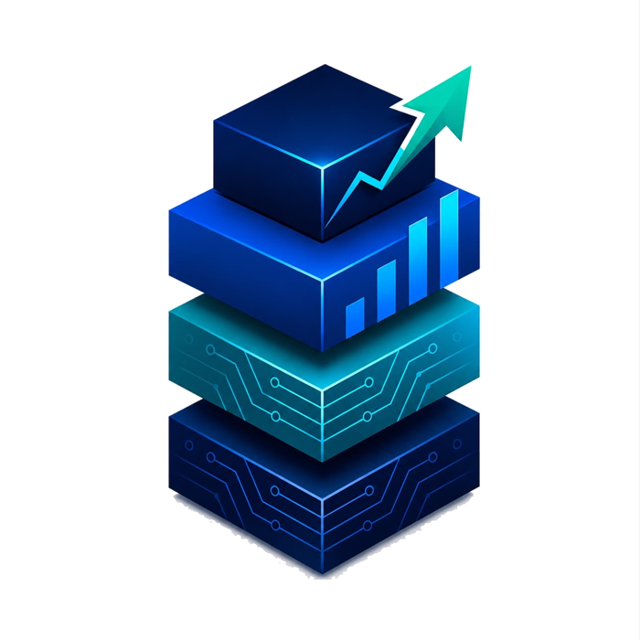

Error 404
That page moved
or never existed.
No harm done. Here's what you were most likely looking for.
Need something else? Talk to us.

STACNo harm done. Here's what you were most likely looking for.
Need something else? Talk to us.